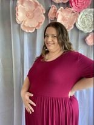

I have been consistently immersed in the work force for over ten years. I have experience in several fields spanning between Logan, UT and as far south as Draper, UT. The most common thread I have gained experience in is with computers and various programs. I have found value in every job I have had, one of which introduced me to my husband, Scott. We have been happily married for 6 years with a little girl on the way. Scott and Baby Girl are what drive me to excel in the work force.
I can confidently say that I have grown comfortable with these different programs as I have learned how to use them on the job. I always wondered if I might be any good with computers if I sought additional training and schooling. Tech-Moms has been an excellent way to test my skills and stretch myself. I have been inspired by the hard-working women and mothers that I have shared my time with, and feel more sure of myself than ever.